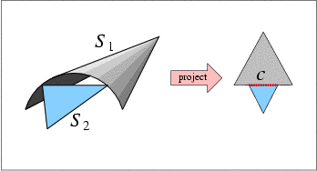
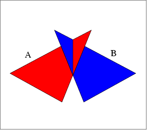
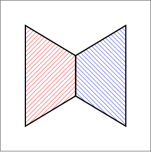
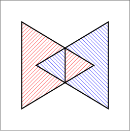

|
CGAL 6.0 - 3D Envelopes
|
Loading...
Searching...
No Matches
|
CGAL 6.0 - 3D Envelopes
|
A continuous surface \( S\) in \( {\mathbb R}^3\) is called \( xy\)-monotone, if every line parallel to the \( z\)-axis intersects it at a single point at most. For example, the sphere \( x^2 + y^2 + z^2 = 1\) is not \( xy\)-monotone as the \( z\)-axis intersects it at \( (0, 0, -1)\) and at \( (0, 0, 1)\); however, if we use the \( xy\)-plane to split it to an upper hemisphere and a lower hemisphere, these two hemispheres are \( xy\)-monotone.
An \( xy\)-monotone surface can therefore be represented as a bivariate function \( z = S(x,y)\), defined over some continuous range \( R_S \subseteq {\mathbb R}^2\). Given a set \( {\cal S} = \{ S_1, S_2, \ldots, S_n \}\) of \( xy\)-monotone surfaces, their lower envelope is defined as the point-wise minimum of all surfaces. Namely, the lower envelope of the set \( {\cal S}\) can be defined as the following function:
\begin{eqnarray*} {\cal L}_{{\cal S}} (x,y) = \min_{1 \leq k \leq n}{\overline{S}_k (x,y)} \ , \end{eqnarray*}
where we define \(\overline{S}_k(x,y) = S_k(x,y)\) for \((x,y) \in R_{S_k}\), and \(\overline{S}_k(x,y) = \infty\) otherwise.
Similarly, the upper envelope of \({\cal S}\) is the point-wise maximum of the \(xy\)-monotone surfaces in the set:
\begin{eqnarray*} {\cal U}_{{\cal S}} (x,y) = \max_{1 \leq k \leq n}{\underline{S}_k (x,y)} \ , \end{eqnarray*}
where in this case \( \underline{S}_k(x,y) = -\infty\) for \( (x,y) \not\in R_{S_k}\).
Given a set of \( xy\)-monotone surfaces \( {\cal S}\), the minimization diagram of \( {\cal S}\) is a subdivision of the \( xy\)-plane into cells, such that the identity of the surfaces that induce the lower diagram over a specific cell of the subdivision (be it a face, an edge, or a vertex) is the same. In non-degenerate situation, a face is induced by a single surface (or by no surfaces at all, if there are no \( xy\)-monotone surfaces defined over it), an edge is induced by a single surface and corresponds to its projected boundary, or by two surfaces and corresponds to their projected intersection curve, and a vertex is induced by a single surface and corresponds to its projected boundary point, or by three surfaces and corresponds to their projected intersection point. The maximization diagram is symmetrically defined for upper envelopes. In the rest of this chapter, we refer to both these diagrams as envelope diagrams.
It is easy to see that an envelope diagram is no more than a planar arrangement (see Chapter 2D Arrangements), represented using an extended DCEL structure, such that every DCEL record (namely each face, halfedge and vertex) stores an additional container of it originators: the \( xy\)-monotone surfaces that induce this feature.
Lower and upper envelopes can be efficiently computed using a divide-and-conquer approach. First note that the envelope diagram for a single \( xy\)-monotone curve \( S_k\) is trivial to compute: we project the boundary of its range of definition \( R_{S_k}\) onto the \( xy\)-plane, and label the faces it induces accordingly. Given a set \( {\cal D}\) of (non necessarily \( xy\)-monotone) surfaces in \( {\mathbb R}^3\), we subdivide each surface into a finite number of weakly \( xy\)-monotone surfaces, We consider vertical surfaces, namely patches of planes that are perpendicular to the \( xy\)-plane, as weakly \( xy\)-monotone, to handle degenerate inputs properly. and obtain the set \( {\cal S}\). Then, we split the set into two disjoint subsets \( {\cal S}_1\) and \( {\cal S}_2\), and we compute their envelope diagrams recursively. Finally, we merge the diagrams, and we do this by overlaying them and then applying some post-processing on the resulting diagram. The post-processing stage is non-trivial and involves the projection of intersection curves onto the \( xy\)-plane - see [1] for more details.
The implementation of the envelope-computation algorithm is generic and can handle arbitrary surfaces. It is parameterized with a traits class, which defines the geometry of surfaces it handles, and supports all the necessary functionality on these surfaces, and on their projections onto the \( xy\)-plane. The traits class must model the EnvelopeTraits_3 concept, the details of which are given below.
As the representation of envelope diagrams is based on 2D arrangements, and the envelop-computation algorithm employs overlay of planar arrangements, the EnvelopeTraits_3 refines the ArrangementXMonotoneTraits_2 concept. Namely, a model of this concept must define the planar types Point_2 and X_monotone_curve_2 and support basic operations on them, as listed in Section The Geometry Traits. Moreover, it must define the spatial types Surface_3 and Xy_monotone_surface_3 (in practice, these two types may be the same). Any model of the envelope-traits concept must also support the following operations on these spatial types:

|

|
| (a) | (b) |
Figure 39.1 (a) The spheres \( S_1\) and \( S_2\) have only one two-dimensional point \( p\) in their common \( xy\)-definition range. They do not necessarily intersect over this point, and the envelope-construction algorithm needs to determine their relative \( z\)-order over \( p\). (b) The \( z\)-order of the surfaces \( S_1\) and \( S_2\) should be determined over the \( x\)-monotone curve \( c\). The comparison is performed over the interior of \( c\), excluding its endpoints.
Given an \( xy\)-monotone surface \( S\), construct all planar curves that form the boundary of the vertical projection \( S\)'s boundary onto the \( xy\)-plane.
This operation is used at the bottom of the recursion to build the minimization diagram of a single \( xy\)-monotone surface.
Given two \( xy\)-monotone surfaces \( S_1\) and \( S_2\), and a planar \( x\)-monotone curve \( c\), which is a part of their projected intersection, determine the \( z\)-order of \( S_1\) and \( S_2\) immediately above (or, similarly, immediately below) the curve \( c\). Note that \( c\) is a planar \( x\)-monotone curve, and we refer to the region above (or below) it in the plane. If \( c\) is a vertical curve, we regard the region to its left as lying above it, and the region to its right as lying below it.
This operation is used by the algorithm to determine the surface that induce the envelope over a face incident to \( c\).
Given two \( xy\)-monotone surfaces \( S_1\) and \( S_2\), and a planar \( x\)-monotone curve \( c\), which fully lies in their common \( xy\)-definition range, and such that \( S_1\) and \( S_2\) do not intersect over the interior of \( c\), determine the relative \( z\)-order of \( s_1\) and \( s_2\) over the interior of \( c\). Namely, we compare \( S_1(x_0,y_0)\) and \( S_2(x_0,y_0)\) for some point \( (x_0, y_0)\) on \( c\).
This operation is used by the algorithm to determine which surface induce the envelope over an edge associated with the \( x\)-monotone curve \( c\), or of a face incident to \( c\), in situations where the previous predicate cannot be used, as \( c\) is not an intersection curve of \( S_1\) and \( S_2\) (see Figure 39.1 (b) for an illustration of a situation where this operation is used).
The package currently contains a traits class for named Env_triangle_traits_3<Kernel> handling 3D triangles, and another named Env_sphere_traits_3<ConicTraits> for 3D spheres, based on geometric operations on conic curves (ellipses). In addition, the package includes a traits-class decorator that enables users to attach external (non-geometric) data to surfaces. The usage of the various traits classes is demonstrated in the next section.

|

|

|
| (a) | (b) | (c) |
Figure 39.2 (a) Two triangles in \( {\mathbb R}^3\), as given in envelope_triangles.cpp. (b) Their lower envelope. (c) Their upper envelope.
The following example shows how to use the envelope-traits class for 3D triangles and how to traverse the envelope diagram. It constructs the lower and upper envelopes of the two triangles, as depicted in Figure 39.2 (a) and prints the triangles that induce each face and each edge in the output diagrams. For convenience, we use the traits-class decorator Env_surface_data_traits_3 to label the triangles. When printing the diagrams, we just output the labels of the triangles:
File Envelope_3/envelope_triangles.cpp
The next example demonstrates how to instantiate and use the envelope-traits class for spheres, based on the Arr_conic_traits_2 class that handles the projected intersection curves. The program reads a set of spheres from an input file and constructs their lower envelope:
File Envelope_3/envelope_spheres.cpp
The next example demonstrates how to instantiate and use the envelope-traits class for planes, based on the Arr_linear_traits_2 class that handles infinite linear objects such as lines and rays.
File Envelope_3/envelope_planes.cpp